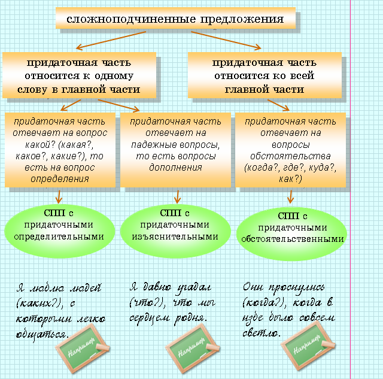

сложносочиненные предложения с противительными союзами
сложносочиненные предложения с разделительными союзами.
|
сложносочиненные предложения с соединительными союзами сложносочиненные предложения с противительными союзами сложносочиненные предложения с разделительными союзами. |
 |
Союзы и, да могут быть как одиночными, так и повторяющимися. |  |
Прозрачный лес один чернеет, и ель сквозь иней зеленеет, и речка подо льдом блестит (А. С. Пушкин). |
|
Союзы в таких предложениях могут выражать значения одновременности | |
Уже ночь ложилась на горы, и туман начинал бродить в ущельях. |
|
и последовательности | |
Над озером блеснула тусклая зарница, и лишь минуту спустя прокатился далекий гром. |
|
Значение последовательности может быть дополнительно осложнено причинно-следственными и условно-следственными отношениями. | |
Ему стало жарко, и он распахнул полушубок
(отношения причины). Сумейте создать соответствующие условия, и вы продлите жизнь растений (отношения условия). |
|
Сложноподчиненное предложение (СПП) состоит из неравноправных частей, где одна часть зависит от другой. Независимая часть называется главной частью, а зависимая — придаточной. От главной части к придаточной можно задать вопрос. |
|
Владимир с ужасом увидел, (что?) что заехал в незнакомый лес. |
